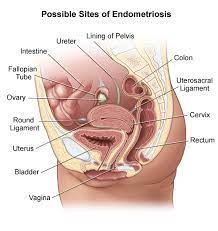

Endometriosis

CAUSES
Although the exact cause of endometriosis is not certain, possible explanations include:
- Retrograde menstruation. In retrograde menstruation, menstrual blood containing endometrial cells flows back through the fallopian tubes and into the pelvic cavity instead of out of the body. These endometrial cells stick to the pelvic walls and surfaces of pelvic organs, where they grow and continue to thicken and bleed over the course of each menstrual cycle.
-
Transformation of peritoneal cells. In what's known as the "induction theory," experts propose that hormones or immune factors promote transformation of peritoneal cells — cells that line the inner side of your abdomen — into endometrial-like cells.
-
Embryonic cell transformation. Hormones such as estrogen may transform embryonic cells — cells in the earliest stages of development — into endometrial-like cell implants during puberty.
-
Surgical scar implantation. After a surgery, such as a hysterectomy or C-section, endometrial cells may attach to a surgical incision.
-
Endometrial cell transport. The blood vessels or tissue fluid (lymphatic) system may transport endometrial cells to other parts of the body.
-
Immune system disorder. A problem with the immune system may make the body unable to recognize and destroy endometrial-like tissue that's growing outside the uterus.
SYMPTOMS
Common signs and symptoms of endometriosis include:
- Painful periods (dysmenorrhea). Pelvic pain and cramping may begin before and extend several days into a menstrual period. You may also have lower back and abdominal pain.
-
Pain with intercourse. Pain during or after sex is common with endometriosis.
-
Pain with bowel movements or urination. You're most likely to experience these symptoms during a menstrual period.
-
Excessive bleeding. You may experience occasional heavy menstrual periods or bleeding between periods (intermenstrual bleeding).
-
Infertility. Sometimes, endometriosis is first diagnosed in those seeking treatment for infertility.
-
Other signs and symptoms. You may experience fatigue, diarrhea, constipation, bloating or nausea, especially during menstrual periods.